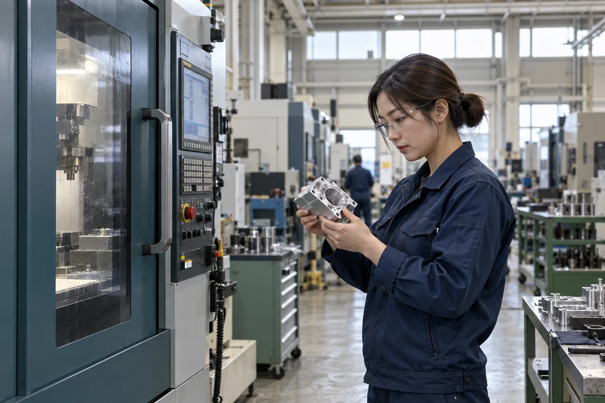
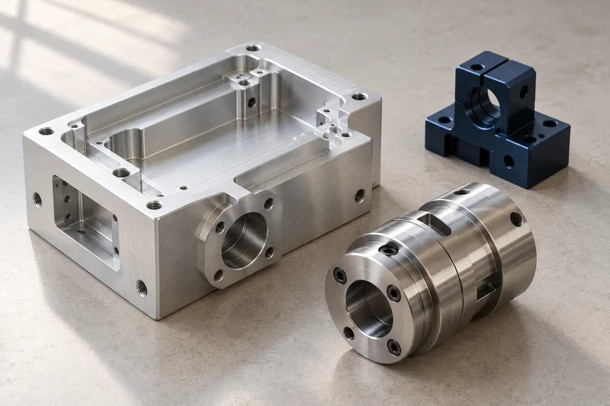
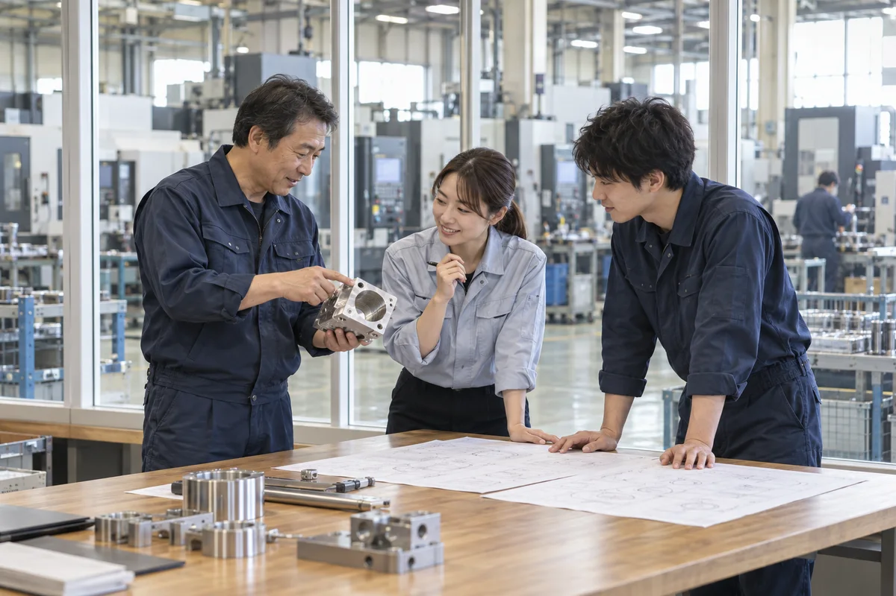

PRECISION BUILDS TRUST.
小さな精度が、
大きな信頼に。
ひとつの部品に、使う人の未来まで。
ワンビー工業は、金属加工から組立まで、
ものづくりの「その先」を考える会社です。
METALWORKING
ENGINEERING & ASSEMBLYJAPAN
MANUFACTURING
ENGINEERING & ASSEMBLYJAPAN
MANUFACTURING

THE CRAFT IN EVERY DETAIL.01 / FACTORY
01切削加工MACHINING
02治具・工程設計ENGINEERING
03組立・品質確認ASSEMBLY & QUALITY
01 — ABOUT ONEBE
図面の先まで、
一緒に考える。
つくる前に、よく聞く。
つくる途中で、確かめる。
つくった後も、考え続ける。
小さな金属部品も、設備を支える治具も、誰かの仕事を動かす大切な一つ。私たちはその役割を理解することから、ものづくりを始めます。
設計、加工、組立、品質確認。それぞれの現場の知恵をつなぎ、相談しやすく、任せやすい製造パートナーを目指します。
会社について ↗02 — OUR TECHNOLOGY
考える力と、
つくる技術。
部品から工程へ。
ものづくりを、一つの流れで支える。

PRECISION MACHINING
精密切削加工
金属の性質を読み、必要なかたちを削り出す。図面の意図と加工の条件をすり合わせながら、一つひとつの部品をつくります。
- 加工方法
- マシニング加工・旋盤加工
- 検討素材
- アルミニウム・鉄・ステンレス
- ご相談
- 試作部品・装置部品・小ロット製作
03 — HOW WE MAKE
つながる工程。
重なる、確かさ。
一人の技術を、チームの品質に。
ご相談から納品までの流れをご紹介します。
※工程は製品の仕様・ご相談内容により異なります。本ページは架空の事業設定です。

04 — PEOPLE & WORK
技術は、人から。
未来は、チームから。
手を動かす人と、仕組みを考える人。
違う得意を持つ仲間が集まるから、
できることは、もっと広がっていく。
05 — JOURNAL
工場からのお便り。
COMPANY PROFILE
会社概要
- 会社名
- ワンビー工業株式会社（架空）
- 英語表記
- ONEBE INDUSTRIES
- 事業設定
- 精密金属加工
治具・工程設計
組立・品質確認 - サイト制作
- OneBe / デザインスタディ
実在する同名の企業・団体とは関係ありません。